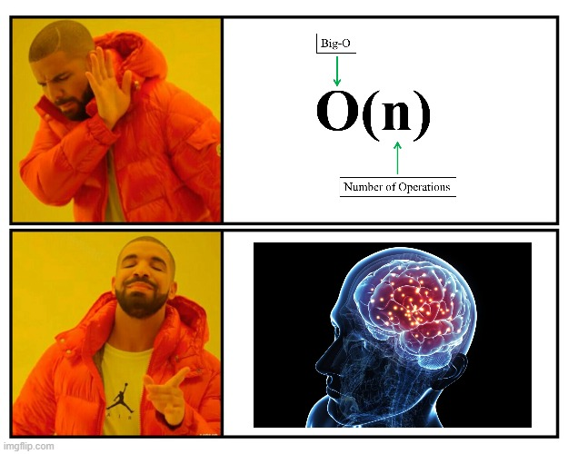
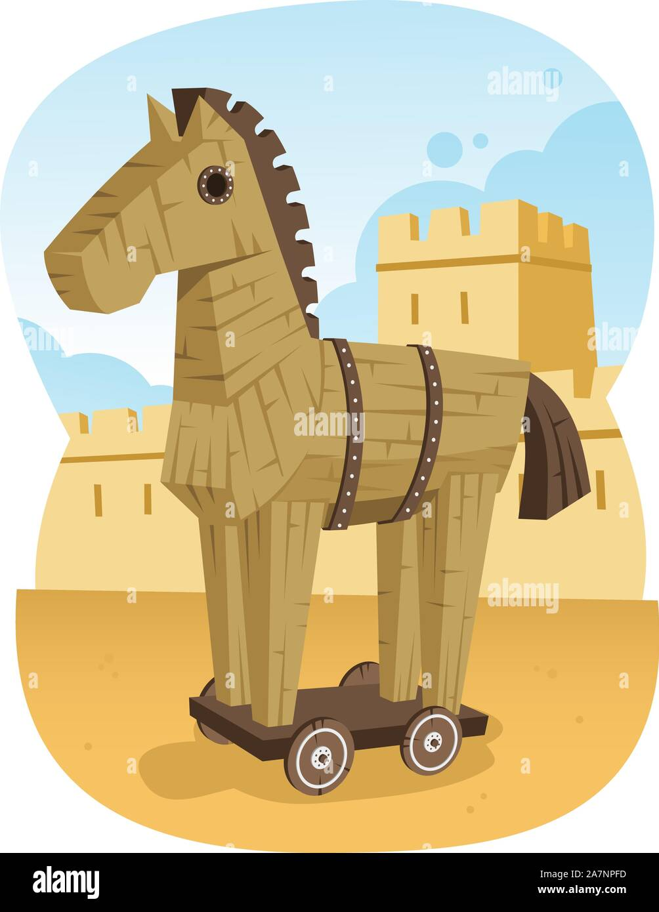

Quelle: Alan Kay, "Power of Simplicity"
Complexity als Last für unser Gehirn
nicht als Last für die CPU

essential complexity
"we have a hard problem"
Die Komplexität der Anwendungs-Domäne
accidental complexity
"we have made a problem hard"
Der ganze Rest
Quellen
"A Philosophy of Software Design" John Ousterhout
"Simple Made Easy" - Rich Hickey
https://www.youtube.com/watch?v=SxdOUGdseq4
Alan Kay, "Power of Simplicity"
https://www.youtube.com/watch?v=NdSD07U5uBs
Kevlin Henney: Essential versus Accidental Complexity
https://www.youtube.com/watch?v=OFoAHSEDwe8
"Why Can't We Make Simple Software?" - Peter van Hardenberg
https://www.youtube.com/watch?v=czzAVuVz7u4
accidental complexity
Quelle: Alan Kay, "Power of Simplicity"
Begriffe:
Rich Hickey: problem complexity vs. incidental complexity
Allan Kay: essential complexity vs. complications
Fred Brooks, Kevlin Henney: essential complexity vs. accidental complexity
Ousterhout: unnecessary complexity
Complexity != lines of code
A large system can still be simple.
hard to understand and modify = complicated
easy to understand and modify = simple
(Ousterhout)
complexity getting out of hand is the biggest internal threat to software development projects (citation needed)
Abhängen der anderen Entwickler
loss of Intellectual Control (nachfolgend erklärt)
The ability to read the code (of a module) and fully understand its flow and outcome. In short: to reason about the code. (not Dijkstra's definition)
accidental complexity in allen Ebenen:
causes of complexity: dependencies and obscurity
a dependency exists when a given piece of code cannot be understood and modified in isolation; the code relates in some way to other code, and the other code must be considered and/or modified if the given code is changed.
obscurity occurs when important information is not obvious.
(Ousterhout)
wo kommt accidental complexity her?
export const checkDates = (list: Array<DatePeriod>, current: DatePeriod): Array<DatePeriod> => { ... }
versus
export const omitCurrent = (list: Array<DatePeriod>, current: DatePeriod): Array<DatePeriod> => { ... }
Vermischung: eine Code-Stelle behandelt mehrer Ideen gleichzeitig, statt separate Ideen separat zu behandeln
Gedankenexperiment: kann ich code "einfärben"
const [randomIndices, setRandomIndices] = useState(()=>[
...getRandom({ cardinality: 3, range: preparedQuestions, taken: [] })
])
...
<div className={styles.preparedQuestions}>
{preparedQuestions!.map((snippet, index) => randomIndices.includes[index] ? (
<Button onClick={() => setQuestion(snippet)}>
{snippet}
</Button>
) : null)}
</div>
{(preparedQuestions?.length as number) > randomIndices.length && (
<Button onClick={() => setRandomIndices((indices) => [
...indices, ...getRandom({ cardinality: 3, range: preparedQuestions, taken: indices })
])}>
Weitere Fragen
</Button>
)}
const [maxPreparedQuestions, setMaxPreparedQuestions] = useState<number>(3)
const [shuffledQuestions] = useState(() => shuffle(preparedQuestions ?? []))
...
<div className={styles.preparedQuestions}>
{shuffledQuestions!.slice(0, maxPreparedQuestions).map((snippet) => (
<Button onClick={() => setQuestion(snippet)}>
{snippet}
</Button>
))}
</div>
{(preparedQuestions?.length as number) > maxPreparedQuestions && (
<Button onClick={() => setMaxPreparedQuestions((n) => n + 3)}>
Weitere Fragen
</Button>
)}
export const ModalDialog = ({children, onOpen, onClose, ...props}) => {
const onOpenRef = useLatestRef(onOpen)
useEffect(() => {
if (dialog.current) {
const observer = new MutationObserver((mutations) => {
const openAttrChanged = mutations
.filter(
(m) =>
m.type === 'attributes' &&
m.target === dialog.current &&
m.attributeName === 'open',
)
.pop()
if (openAttrChanged) {
const newValue = (openAttrChanged.target as HTMLDialogElement).open
setIsOpenInternal(newValue)
if (newValue) onOpenRef.current?.()
}
})
observer.observe(dialog.current, { attributeFilter: ['open'] })
const syncStateClose = () => setIsOpenInternal(false)
dialog.current.addEventListener('close', syncStateClose)
return () => {
dialog.current?.removeEventListener('close', syncStateClose)
observer.disconnect()
}
}
}, [])
return (
<dialog
{...props}
onClose={onClose}
>
{children}
</dialog>
)
}
export const ModalDialog = ({children, onOpen, onClose, ...props}) => {
return (
<dialog
{...props}
onOpen={onOpen}
onClose={onClose}
>
{children}
</dialog>
)
}
z.B. leichte Verwendbarkeit unseres Programms dadurch erkauft, daß wir einen Bundler verwenden
-> gestiegene Komplexität des Projekt-Setup
wrong building block
Anekdote:
Menü mit <ListBox> vs <StackPanel>
SelectedItemChanged als Auslöser für ein Menü-CommandSelectedItem<StackPanel> mit <Button>zerklitterung
Anekdote: Eine simple Funktion in fünf winzige Funktionen zerlegt, sodass die tatsächliche Funktionalität völlig unverständlich wurde.

Missverhältnis von Tiefe und Breite
Module sollen mehr Komplexität verbergen als sie durch ihre existenz Erzeugen
Nach Ousterhout:
modules should be deep
deep and shallow modules. the best modules are deep: they allow a lot of functionality to be accessed through a simple interface. a shallow module is one with a relatively complex interface, but not much functionality: it doesn't hide much complexity.
type DatePeriod = {
start: ISO8601Date;
end: ISO8601Date;
};
export const check = (list: Array<DatePeriod>, current: DatePeriod): Array<DatePeriod> => {
const newList: Array<DatePeriod> = [];
if (list) {
list.forEach((existingPeriod) => {
if (
existingPeriod?.start &&
existingPeriod?.end &&
existingPeriod?.start !== current?.start &&
existingPeriod?.end !== current?.end
) {
newList.push({
start: existingPeriod?.start,
end: existingPeriod?.end,
});
}
});
}
return newList;
};
versus
newList = list.filter(
(period) => period.start !== current.start && period.end !== current.end
);
tactical programming
nach Ousterhout: [tactical programming] is short-sighted. [...] trying to finish a task as quickly as possible [with disregard for system structure]. this is how systems become complicated. [...] complexity is incremental. If you program tactically, each programming task will contribute a few of these complexities.
data fudging: meddling with data motivated by a purely presentational concern
Anekdote:
get satelliteDisabled() {
return (
this.widgetMeta?.satellite === false ||
this.config._tracking?.inview === null ||
(this.topParent !== this.root &&
this.config._tracking?.inview === undefined &&
BaseState.NESTED_WIDGETS.includes(this.topParent.dataset.fsw!))
)
}
accidental complexity
Nein, nur theoretisches Ideal - wie der absolute Nullpunkt der Physik. Außerdem: Tradeoffs, und unverschuldete Komplexität existieren
Aber wenn man nun mal in seinem Projekt tief in der roten Zone ist?
Was tun?
Es muss nicht immer gleich ein Refactoring sein!
Wertvollste Information im Code ist: Intention
Vorgehen: